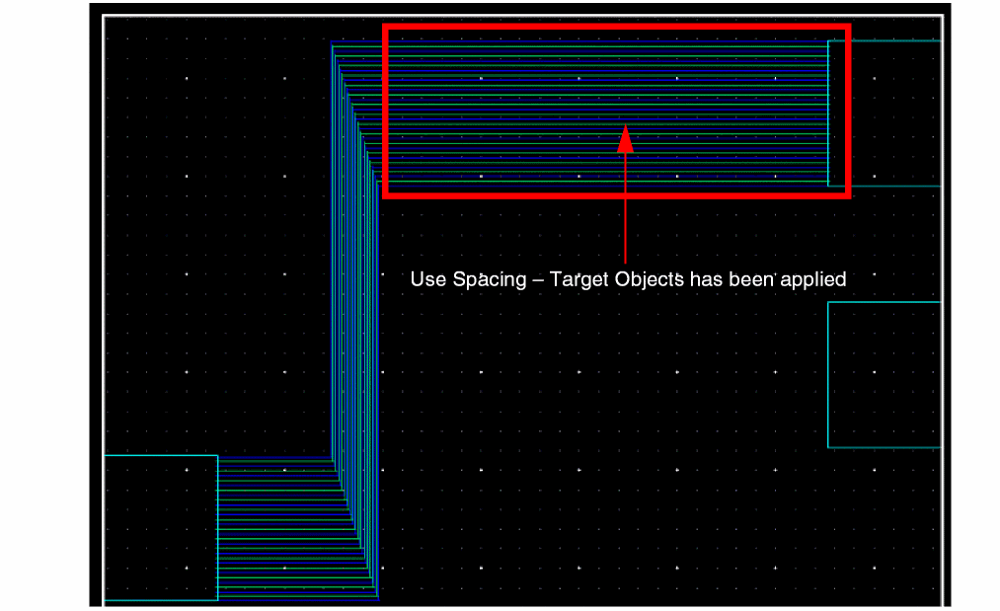

5
Working with Buses
You can create a bus in the Virtuoso Layout Suite by using the Create – Wiring – Bus command. All wires of the bus, referred to as bus bits, are created on the same layer. When you change the bus layer, all bus bits change to the same layer. A bus now supports a mixture of assigned and unassigned nets, as well as repeated nets. Consider an example, where a bus has five bits bus such as:
bit0 = net “a”, bit1 = net “b”, bit2 = unassigned net, bit3 = net “c”, bit4 = unassigned net
The corresponding bundle notation is as follows
“a” + “,” + “b” + “,” + “” + "," + “c” + “,” “” = “a,b,,c,”.
This means the bus supports a mixture of assigned and unassigned nets.
Another example, where a bus has three bits such as:
bit0 = net "a", bit1 = net "b", bit2 = net "a"
The corresponding bundle notation is as follows
"a" + "," + "b" + "," + "a" = "a,b,a".
This means the bus supports repeated nets.
For creating a bus, ensure that the technology file contains the minimum information, such as complete foundry rules, and that the non-default or override constraint groups, if any, are specified in the virtuosoDefaultSetup or LEFDefaultRouteSpec) that defines the valid layers and the vias allowed for routing must be present in the technology file.
You can either directly refer to the procedure described in Creating a Bus.
This chapter covers the following topics:
- Creating a Bus Constraint
- Autopicking Bus Bits
- Creating a Bus
- Restarting a Bus From Existing Routes
- Using the Control Wire
- Editing a Bus
- Avoiding Shorts with Existing Blockages for Create Bus
- Supporting Multi-Layer Bus
Creating a Bus Constraint
You can create a bus constraint by using the Constraint Manager and the Search assistant. The bus constraint helps to group all nets to be routed as a bus. The Create Bus command recognizes the bus constraint. The Create Bus command starts routing the bus if you start digitization from any one of the bus pins. This feature is also known as autopicking the bus bits. For more information, see Autopicking Bus Bits.
The Constraint Manager is available only XL tier onwards. So you can use the bus constraint for creating a bus only XL tier onwards. For information about how to create a bus in L tier, see Creating a Bus.
To create a bus constraint in In Layout XL and higher tiers by using the Constraint Manager:
-
From the layout cellview, choose Window – Assistants – Constraint Manager.
The Constraint Manager assistant opens. -
From the layout cellview, select Window – Assistants – Navigator.
The Navigator assistant opens. - From the Navigator assistant, select several nets that you want to route as a bus. Alternatively, you can also search for nets in the design by using the Search assistant.
-
In the Constraint Manager assistant, click on the arrow next to the Constraint Generator icon.
-
Select Routing – Bus.
-
Expand the created constraint to verify the selected nets are part of the bus.
Autopicking Bus Bits
When a selected net is part of a bus constraint, autopick determines the other nets of that bus constraint on the same layer as the picked net and adds one object of each net to the pick set. If there are pre-routed nets from pins and instPins, autopick picks these wires as well and creates duplicate wires on top of the pre-existing wires.
For information about how to create a bus constraint, see Creating a Bus Constraint.
If you start the Create Bus command and click a single pin that belongs to a bus constraint, the command automatically enables bus mode. In the example below, a bus constraint is defined on netx<0>, netx<1>, and netx<2>.
After starting the Create Bus command, if you click on pin x<0>, autopick adds pin x<1> and pin x<2>to the pick set.
If you area select pin x<0>, pin x<1>, and pin x<2>, then pin x<0> and pin x<1>, being part of the bus constraint, start routing in the bus mode. The other pins are not picked even though they were included in area selection because it does not belong to the bus.
Autopick does not pick instPins that belong to different instances. For example, nets A, B and C are part of a bus constraint. Nets A and B have associated instPins on the instance I0 and net C has the associated instPin on the instance I1. In this case, autopick on net A from instPin on instance I0 will pick and draw wire for net B on instance I0. Autopick will not pick instPin on net C as it belongs to a different instance I1, even though net C belongs to the same bus constraint as nets A and B.
To remove nets from an autopicked bus while the Create Bus command is running, keep the Ctrl key pressed and click on the required pins. To add nets to a bus while the Create Bus command is running, keep the Shift key pressed and click on the required pins. In the above example, to route only neta and netb, keep the Ctrl key pressed and click on pind to remove it from the pick set.
The Create Bus command uses the following criteria to determine the objects that are autopicked:
- Autopicked instance or top-level pins have the following same parameters as the clicked instance or top-level pin:
- Autopicked objects are on the same LPP as the clicked object.
- Connectivity is assigned to all nets.
- Number of bends should be same for all selected wires.
In a set of objects that can be autopicked, preference is given to objects in the following order:
- Aligned instPins (x or y axis)
- Closest instPins
- instPins with the same access direction (top, bottom, left, right)
If autopick fails to find adequate objects, you might need to complete the pick set manually.
Creating a Bus
You can start creating buses from the following starting points:
- From a point in free space
- From existing pins
- From pre-existing bus pre-routes (see Restarting a Bus From Existing Routes)
To create multiple floating wires, see Creating a Floating Wire.
- Launch Virtuoso Layout Suite.
-
Select Create – Wiring – Bus or click on the icon
on the Create toolbar.
When you start the Create Bus command in Layout EXL, the Interactive Routing Bindkeys hint box is displayed at the top-left corner of the layout canvas. The hint box describes the most useful bindkeys and shortcuts for the Create Bus command.
-
Press
F3.
The Create Bus Form opens. - From the Layers assistant, select a layer on which you want to create the bus.
- Specify the values in the Number of Bits, Bit Spacing, and Width fields.
- To start creating a bus in the empty space in the design display area:
-
To create a bus that has connectivity in the empty space in the design display area:
-
In the Create Bus form, in the Net Name field, specify the list of net names separated by commas or spaces.
You can also specify net names in bus notation. For example, if you specify bus<0:3> in the Net Name field and start bus creation in free space, the bus wires are created on the nets bus<0>, bus<1>, bus<2>, bus<3>.
If the nets specified in the Net Name field do not exist in the design, the nets are created. Using this method, you can create floating buses. - Select the Create Bus Constraint check box if you want a bus constraint to be created automatically for the picked or the specified nets.
- Click at a point in the design display area to digitize the bus.
- Continue to digitize the bus and create bends.
-
Press
Enterto finish creating the bus.
-
In the Create Bus form, in the Net Name field, specify the list of net names separated by commas or spaces.
-
To start creating a bus from existing pins, use one of the following methods to select multiple pins:The Bus is created using the Create – Wiring – Bus command only. The Create – Wiring – Wire command creates single wires and cannot be used to create buses.
-
Selecting Multiple Pins
When you area-select multiple pins that are on the same layer but different nets, the pin nets are used for creating the bus wires; the pin nets are populated in the Net Name field in the Create Bus form.
The starting pins can be I/O pins or Soft Block pins. You can area-select level-0 pin shapes or visible level-1 instPins (The Instance Pins check box should be selected on the Display Options form). You can also start routing related nets in bus mode when top-level pin shapes are pre-selected.
If the pins are on different layers, the Create Bus command begins wires from the routing layer that has the most number of pins. If some of the selected multiple pins are on the same net, then routing begins from only one pin on the net. -
Adding Pins to the Selection
Select a single pin andShift+ click to add additional pins to the selection.
In both the above methods, you can use theCtrlandShiftkeys to remove objects from the selection. -
Autopicking Pins Belonging to a Bus Constraint (In Layout XL and higher tiers)
By creating a bus constraint, you can define the nets to be routed as a bus. Clicking one of the bus pins starts routing all the bus nets in bus mode. For more information, see Creating a Bus Constraint and Autopicking Bus Bits. Even pre-selecting a bus pin that belongs to a bus constraint and then starting the Create Bus command starts routing all the bus pins that belong to the same bus constraint. For more information about creating a bus from existing routes, see Restarting a Bus From Existing Routes. -
Adding Instance Terminals
When you select an instance terminal, the wire editor tries to find if there are qualify terminals from other instances that can be used for the bus. The Create bus selects all the qualify terminals from either horizontal or vertical which ever has more qualified terminal. Following are the qualify terminals:- The instance master of the qualify terminal must be the same instance master of the picking terminal.
- The qualify terminal must be the same terminal on the qualify instance as the picked terminals on the instance of the picked terminals.
-
The qualify terminal must intersect with either horizontal or vertical extent regions of the picked terminal.
-
Selecting Multiple Pins
-
Right-click to display the Create Bus Context-Sensitive Menu.
If required, choose Use Width from the context-sensitive menu to switch the control wire function to one of the extreme wires or the center wire of the bus. For information about control wires, see Using the Control Wire. -
You can change width and spacing overrides at any time while creating or reshaping a bus. If you select the Default Constraints option from the Use Spacing menu, then the spacing after the bend is the
minSpacingas shown in the figure below. The default width is based on theminWidthand the default spacing value is based on theminSpacingconstraint for each layer that can be used for routing.
-
Select Gather/Spread from the Use Spacing menu of the Create Bus Context-Sensitive Menu to gather or spread bus wires before the first bend of wires.
If you select Gather/Spread Bus, the bus wires are surrounded by a dotted box called the bus cursor. Individual wires are gathered or spread inside this box, which can be moved to any desired location. Jogs are added and the wires are gathered to the minimum spacing rule or specified spacing value. The command on the context-sensitive menu toggles to Cancel Gather/Spread.
If you select Gather/Spread Bus repeatedly and one of the times no gather action is performed because the Bit Spacing field in the form is not modified, then the Create Bus command restores the wire spacing that was used before the previous gather operation. For example, if you start creating a bus from pins that are non-uniformly spaced and Bit Spacing is0, and select Gather/Spread Bus from the Create Bus context-sensitive menu, the wires are gathered to minSpacing. Click and drag to pass the obstruction. If you select Gather/Spread Bus again without changing the Bit Spacing value, the command restores the spacing that was used before the previous spacing, that is, the pin spacing will be restored.
When routing a bus, each time you move the pointer, the locations of the last pathSeg leading up the pointer are computed. If you select Cancel Gather/Spread Wires and the wires are not fanned out to a via pattern, only one segment leads to the pointer for each wire. If you select Gather/Spread Bus, jogs are added to the pathSegs to bring them closer together if they are spaced farther than the minimum spacing.
PressingBackspaceremoves the jogs and the wires are not gathered or spread.
-
To change the spacing between multiple wires, press
F3to open Create Bus form. In the Bit Spacing field of the Create Bus form, specify the new spacing value. You can also change the spacing with the Use Spacing menu or the Wire Assistant.
The spacing is updated from the last digitized point. -
If required, change the bus wire width in the Width field in the Create Bus form or select the appropriate option from the Use Width menu on the Create Single Wire Context-Sensitive Menu.
The width is updated from the last digitized point. -
To remove the last segment of a wire, use
Backspace.
Bus editing supports Undo, Redo, andBackspace. - To change layers and add vias or to fan vias out to connect to the vias, see Changing Layers and Selecting Vias.
-
You can finish creating the bus at any point by double clicking or by pressing
Enter. The bus ends at the pointer location.
You can check the connectivity of the bus bits by using the Edit Properties form or the Property Editor assistant.
For finishing the bus connections automatically, see Finishing Connections.
Restarting a Bus From Existing Routes
You can use the Create Bus command to restart a bus by picking the end-point of any of the floating bus wires that are on nets belonging to the same bus constraint. You can restart a bus with wires on different purposes but same metal layer.
To restart an existing bus, where the bus wires belong to a bus constraint:
-
Choose Create – Wiring – Bus.
-
Click at the end-point of any of the bus wires.
All the bus wires start routing on the same layer.
To restart an existing bus, where the bus wires do not belong to a bus constraint, use the wire tie-out method, as described below:
- Choose Create – Wiring – Bus.
-
Pick bus wires by area-selecting all the wires of the bus.
The Select Via form opens.For more information, refer to Using the Select Via Form. - Select the appropriate via for changing the bus to the required layer.
- Specify the required via alignment.
-
Digitize the via.
The Select Via form closes. -
Continue routing and digitizing the bus.
The following figures shows a wire tie-out.
Using the Control Wire
In the set of multiple wires, one of the wire segments is called the control wire. In a bus, it stands out as being the probed/highlighted wire segment with a small yellow box at the end of the wire segment. By default, the center wire is the control wire.
The control wire serves as a pivot point as the multiple wires are dragged into routing position. The other wires of the selected bus set follow the control wire at appropriate spacing.
You can toggle the control wire role to one of the extreme wires of the selected bus. When creating or editing multiple wires, you can cycle the control wire role to the Top-Middle-Bottom (in a horizontal bus) or Left-Middle-Right (in a vertical bus) wires by selecting the Cycle Control Wire option from the Create Bus Context-Sensitive Menu.
The wire segment assigned as the control wire continues to function as the control wire even if you select the Backup Point option from the context menu during multiple wire editing. The control wire, however, defaults to the middle wire if you add or remove (Ctrl + click) any wire segment to/from the bus.
For example, in the following figure, the middle wire is the control wire.
Right-click to select the Cycle Control Wire option from the context menu or press Control + Shift + X. The probing/highlighting and the yellow box passes on to the next possible control wire, which is the left one here.
Again, select the Cycle Control Wire option from the context menu or press the combination Control + Shift + X. It probes/highlights the right wire as the control wire.
When multiple wires are turned on the same layer, the control wire serves as the pivot point for turning the bus and determining the route. The following figures illustrate this.
For best results, move the pointer over the yellow box at the end of the control wire when digitizing points for multiple wires. This reduces conflicts and allows better control of wire placement.
Flightlines are drawn from the current edited or created wires to the closest targets. Flightlines in a bus are controlled by the flightline starting from the control wire. The flightline from the control wire always targets the closest object, called the control target. Flightlines from other bus wires target pins that belong to the same instance and are of the same type or LPP as the control target. If no preferred choice target can be determined based on the control target, the closest object is chosen as the target.
In the example below, wire on netc is the control wire and its control target is an instPin of the instance busSub. Instance pins on neta and netb of the instance busSub are not the closest targets for the wires on neta and netb but they belong to the same instance as the control target. Therefore, flightlines of wires on netx<2> and netx<1> are also drawn to busSub instead of being drawn to I1.
If, however, wire on netb is the control wire, as shown below, the only appropriate targets for wires on neta and netc are their respective closest targets. For wire on neta, it is the instPin a of instance I1. For wire on netc, the closest target is the instPin c of instance busSub.
Editing a Bus
In the IC6.1.6 ISR3 release, a new Edit – Wiring – Bus command has been introduced. The Edit Bus command is available only in Layout XL and higher tiers. Using the Edit Bus command, you can interactively change the width and spacing gap for the selected parts of a bus. The selected bus must consist of a set of parallel wires with the same number of bends. You can edit different and separate portions of a bus, several bits, or the entire bus depending on the selection. Only the selected parts of a bus can be modified while the unselected parts can be edited in certain cases to ensure valid connectivity. The Wire Assistant Bus Bit table is used to set up new width and spacing, either on individual bus bit, or on all the selected bus bits. You can also change the control wire using the Wire Assistant Bus Bit table. The control wire is the reference wire, which remains at the same location and the wires around the control wire are adjusted accordingly. The computation of the edited width and spacing is done from the control wire.
To edit the width or spacing of the selected part of a bus, perform the following steps:
-
Choose Edit – Wiring – Bus. The Wire Assistant opens automatically, displaying the Bus Bit table in the Bus tab of the Override Constraints section. If the Wire Assistant is already opened, the Bus Bit table is automatically updated and displays the net name as unassign and N/A in the columns when there is no bus selected, as shown in the following figure.
However, if the bus is selected before running the Edit – Wiring – Bus command, the net name corresponding to each selected bus bit appears in the Bus Bit table as shown in the figure below.
The above figure shows the Various value in the Width and Gap columns of the Bus Bit table.The Various value in the Width and Gap columns of the Bus Bit table appears when the width of all the selected bus bits is not the same or when the spacing between all the selected bus bits is not the same.
The Various also appears when the width of the selected segments of the bus bit are different, The following figure shows Various appearing on the line net.
Also note that in the selected bus bits, the bus bit with net namecis considered as a control wire.
You can change the control wire by clicking the net name in the Net column of the Bus Bit table. The following figure shows the changed control wire of the selected bus.
You can also change the control wire using the Cycle Control Wire option in the Edit Bus context-sensitive menu. For more information, refer to, Edit Bus Context-Sensitive Menu. -
To change the width, specify the new value in the Width column corresponding to the net name of the bus bit. For example, if you want to change the width of bus bit with net name
d, specify the new value in the Width column corresponding to net named. The following figure shows how the width of the net namedis changed and the spacing between the edited bus bit and the adjacent bus bits is preserved.
Also, once the width of one bus bit is modified, the common Width field of the Bus Bit table displays Various as the different width values are not homogeneous anymore.
You can also change the width of all the selected bus bits. To change the width of all selected bus bits, specify the new width value in the Width column next to All Nets. When you specify the new width value, the width of all the selected bus bits is automatically updated and the spacing between the edited bus bits is automatically adjusted, if necessary, to avoid DRC violations. The following figure shows the edited width of the selected bus bits and the adjusted spacing between them.
-
To change the spacing between two selected bits of a bus, specify the new spacing value in the Gap column between the two bus bits. For example, if you want to change the spacing between the bus bits with net name
candd, specify the new spacing value in the Gap column between the net namecandd. The following figure shows how the spacing gets adjusted between the edited bus bits.
Also, once the spacing between the two bus bits is modified, the spacing between all the selected bus bits is not the same and the common Gap field of the Bus Bit table displays Various.
You can also change the spacing between all the selected bus bits. To change the spacing between all the selected bus bits, specify the new spacing value in the Gap column next to All Nets. The following figure shows how the spacing gets adjusted between all the selected bus bits.
Avoiding Shorts with Existing Blockages for Create Bus
The Create Bus command has been enhanced to avoid creating a short with an existing blockage by skipping tracks. To route the net without a short, the Create Bus command uses the next nearest track that does not have a blockage. For more information, see Avoiding Shorts with Existing Blockages described for the Create Stranded Wire command.
Supporting Multi-Layer Bus
The multi-layer bus functionality is available only in Layout XL and higher tiers. With multi-layer bus support, you can create and digitize the bits of a bus on different metal layers. A multi-layer bus can be created from the following starting points:
- Existing pins
-
Existing bus pre-routes (see Restarting a Bus From Existing Routes)
This section describes the following multi-layer bus functionality.
- Creating a Multi-Layer Bus from Existing Pins
- Creating a Multi-Layer Bus from an Empty Space
- Transitioning Capabilities in a Multi-Layer Bus
- Stacked Wires within Multi-Layer Bus
- Transitioning Capabilities in a Wire Stack within a Multi-Layer Bus
- Customizing Multi-Layer Bus Transition
Creating a Multi-Layer Bus from Existing Pins
To create a multi-layer bus starting from pins located on different metal layers:
-
Choose Create – Wiring – Bus or click on the Create Bus icon
 on the Create toolbar.
on the Create toolbar. - Right-click anywhere in the canvas to display the Create Bus Context-Sensitive Menu.
-
Choose Multi-Layer Bus Selection. If this option is not selected, the bus is created on a single metal layer even if the selected pins are on different metal layers.
- To start creating a bus by digitizing pins on different metal layers, select the required pins in the layout design.
-
Use the options available on the Use Spacing submenu to specify the spacing between the bus bits. The spacing between the bus bits of the multi-layer bus is based on Default Constraints, Source Objects, Target Objects, and Gather/Spread. By default, the Source Objects option is selected. You can change the spacing between the bus bits on different metal layers at any time while creating or reshaping a bus.
-
Source Objects
When selected, the spacing between the bus bits on different metal layers is adjusted to align with the spacing of the source object. The following figure shows the spacing between the bus bits when Source Objects is selected. -
Default Constraints
When selected, the bus bits are abutted because no minimum spacing exist in between the bus bits on two different layers. The following figure shows that the bus bits of different metal layers are abutted and there is no space in between the bus bits. -
Target Objects
When selected, the spacing between the bus bits on different metal layers is adjusted to align with the spacing of the target object. The following figure shows the spacing between the bus bits when Target Objects is selected. -
Gather/Spread
To change the spacing between the bus bits that are in the same direction before a bend is inserted, use Gather/Spread. Alternatively, you can press theCtrl+Shift+Gkeys.
When gathered, the bus bits are spaced with minimum spacing in order to minimize the space used. After the bus bits are gathered, the adjacent bus bits on different layers are abutted; whereas, the adjacent bus bits on the same layer are evenly spaced at a distance equal to the minimum spacing defined for that layer. In the following figure, you can see a bus with the bits gathered.
-
Source Objects
-
Use one of the following methods to complete the creation of a multi-layer bus,
-
Auto TerminateFor automatic termination of a multi-layer bus, the Auto Terminate option available in the Create Bus form and the Interactive section of the Wire Assistant must be selected.Place the control wire to overlap the target pin, and then double-click or press
Enterto terminate the bus.
The bus bits are placed automatically at the required spacing. The following figure shows a multi-layer bus that is placed using Auto terminate. -
Target Objects
The Use Spacing – Targets Objects option helps prevent jogs, which get added when a bus is placed using Auto Terminate. The following figure shows that the spacing between the bus bits is adjusted based on the spacing between the target pins when the multi-layer bus creation is complete. -
Finish Bus
Use the Finish Bus command to complete a multi-layer bus if the order of the source and target pins is the same. If the order is different, the bus bits are not routed properly. To properly route the bus bits when the order of the source and target pins is different, use the Finish Trunk command. The following figure shows a multi-layer bus placed using the Finish Bus command. -
Finish Trunk
When the bus bits are routed, the twigs and trunks get inserted automatically to appropriately route the bus bits to the target pins that are in different order. The following figure shows a multi-layer bus placed using the Finish Trunk command. All the twigs are created onMetal2to complete the routing of the bus bits to the target pins that are in a different order.
-
Auto Terminate
You can switch the bus bits between layers, but you can do this only after inserting a via. For more information, see Transitioning Capabilities in a Multi-Layer Bus.
You can also specify a pattern for the vias in a multi-layer bus. The via pattern in a multi-layer bus is similar to the one supported for a single-layer bus. For more information, see
Creating a Multi-Layer Bus from an Empty Space
To create a multi-layer bus starting from an empty space:
- Choose Create – Wiring – Bus or click on the Create Bus icon on the Create toolbar.
-
Press
F3.
The Create Bus Form opens. - Select the Custom Layer Pattern check box to enable a customized layer pattern for creating a multi-layer bus.
-
Specify a pattern for creating a multi-layer bus in the Custom Layer Pattern combo box. The specified pattern is added to the drop-down list, along with other available patterns.
You can also select an existing available pattern from the Custom Layer Pattern combo box. The specified custom layer pattern is repeated to adjust the number of bits that have been specified for the multi-layer bus. This happens when the number of bus bits is more than the number of layers specified in the pattern.
For more information on how to define a custom layer pattern, see Defining a Custom Layer Pattern. -
To start creating a digitized multi-layer bus in an empty space, click in the design display area.
The following figure illustrates how a multi-layer bus is created with eight bus bits and a custom layer pattern defined using only four bits (Metal1 Metal2) (Metal2 Metal3). In this case, the custom layer pattern is repeated, (Metal1 Metal2) (Metal2 Metal3) (Metal1 Metal2) (Metal2 Metal3), to adjust the number of bits that have been specified for the multi-layer bus.
-
Right-click to display the Create Bus Context-Sensitive Menu.
Use the options available on the Use Width submenu to specify the width of the multi-layer bus bits.
Similarly, use the options available on the Use Spacing submenu to specify the spacing between the stacks in a multi-layer bus.
For more information about multi-layer bus support, see Supporting Multi-Layer Bus. -
You can move the bus bits up or down one or multiple layers. However, you can do this only after inserting a via. To do this:
- Start the Create Bus command.
- Start creating a multi-layer bus by clicking at a point in an empty space in the design display area.
-
Right-click and select Via Up To <layer name> or Via Down To <layer name> to move the bus bits up or down a layer, respectively. The following figure shows an example in which vias are inserted for a multi-layer bus and the bus bits on different metal layers move up to a higher metal layer when Via Up To <layer name> is selected.You can also move all the bus bits to the same layer, and then switch back to a multi-layer configuration. For more information, see Switching Bus Bits to a Previously Used Multi-Layer Configuration.
-
Press
Enterto complete the multi-layer bus creation.
Defining a Custom Layer Pattern
You can define a custom layer pattern for creating a multi-layer bus starting from an empty space.
The custom layer pattern is a string. The syntax to define a custom layer pattern is:
(layerName1 [purposeName1] layerName2 [purposeName2] ...) [(layerName3 [purposename3]) ...]
In this format, each bus bit is defined with a layer name or a layer-purpose pair name. For example, if the pattern is defined as (Metal1 drawing) (Metal2 drawing), the first bus bit in a two-bit bus is routed on layer-purpose pair Metal1 drawing and the other bus bit is routed on layer-purpose pair Metal2 drawing.
If an error occurs while defining a custom layer pattern, such as parenthesis mismatch (extra '(' or ')' ), unknown layer name, unknown purpose name, or purpose name specified before layer name, a warning message is displayed. The following figure shows an example of the type of message that is displayed.
The following are some of the formats in which a custom layer pattern can be defined for a multi-layer bus.
-
A custom layer pattern with non-stacked bus bits on different metal layers. For example,
Metal1 Metal2 Metal3.
The following figure shows an example with three bus bits and the custom layer pattern defined asMetal1 Metal2 Metal3. In this case, the defined pattern has single bus bits on three different metal layers.
-
Multiple layer names specifying a combination of non-stacked and stacked bus bits. For example,
Metal1 Metal2 (Metal2 Metal3)orMetal1 (Metal2 Metal3) Metal3.
The following figure shows an example with four bits and the custom layer pattern is combination of non-stacked and stacked bus bitsMetal1 Metal2 (Metal2 Metal3). In this case, the defined pattern has single bus bits on two different metal layers and a stack of two bus bits.
-
Multiple layer-purpose pairs enclosed in parenthesis. This defines stacked wires where centerlines overlap each other. For example,
(Metal1 Metal2 Metal3)defines a stack of three bus bits.
The following figure shows an example with three bus bits and the custom layer pattern that is defined consists of three layer names(Metal1 Metal2 Metal3). In this case, a stack of three bus bits is created.
-
A custom layer pattern with multiple stacks. For example,
(Metal1 Metal3) (Metal2 Metal4)defines a pattern having two stacks and each stack consisting of two-bit pattern.
The following figure shows an example with eight bits and the custom layer pattern consists of two stacks(Metal1 Metal3) (Metal2 Metal4). This custom layer pattern defines two stacks, each with a two-bit pattern. However, the four stacks that are seen is because of the repetition.
Transitioning Capabilities in a Multi-Layer Bus
You can move the bus bits up or down one or multiple layers at a time. However, you can do this only after inserting a via. You can also move all the bus bits to the same layer, and then switch back to a multi-layer configuration.
Switching Bus Bits between Layers
You can switch the bus bits between layers by moving up or down one or multiple layers.
- Start the Create Bus command.
- Click and drag to select the required pins.
-
Right-click the bus being created and select Via Up To <layer name> or Via Down To <layer name> to move the bus bits up or down a layer, respectively.
The following figures shows an example where the bus bits onMetal1move up toMetal2and the bus bits onMetal3move up toMetal4when Via Up To <layer name> is selected
Similarly, in the following figure, you can see an example in which the bus bits onMetal2move down one layer toMetal1and the bus bits onMetal4move down toMetal3when Via Down To <layer name> is selected.
Switching Bus Bits to a Target Layer
You can add vias to the layer of the target objects. The target objects are all the objects that are pointed to by the flightlines when the Create Bus command is run. However, if the flightline option in the Wire Assistant is off, then vias are not added.
- Start the Create Bus command.
- Click and drag to select the required pins.
-
Right-click the bus being created and select Via To Target Layer to move the bus bits to the layer of the target objects. The following figures shows an example where the bus bits on
Metal1move up toMetal4asMetal4is the layer of the target objects. Similarly, the bus bit onMetal2 andMetal3move toMetal3andMetal2,respectively, as they are the layer of the target objects.
When a bus bit is already on the same layer as its target object layer, then no via is added for that bus bit. If all bus bits are already on the same layer as their respective target objects, then a via is not added and a message is displayed in CIW as follows: "WARNING* (LE-105035): Already on specified layer."
Switching Bus Bits to the Same Layer
To move all bus bits to the same layer:
- Start the Create Bus command.
- Start creating the bus by digitizing the pins.
- Right-click the bus being created and point to Via.
-
Click Select Via or press the
Spacebarkey.
The Select Via form appears. -
In the form, select the metal layer to which you want to move all the bus bits. In the following figure, all the bus bits are moved to
Metal5.
Switching Bus Bits to a Previously Used Multi-Layer Configuration
Switching the bus bits between a multi-layer configuration and the same metal layer or a target layer provides an easy way to tunnel the bus on one layer, and then quickly switch back to the multi-layer configuration.
For example, create a bus starting from the bus bits on Metal1, Metal2, and Metal3, and then select Via Up To <layer name> to move the bus bits up a layer. The vias are inserted and the bus bits on Metal1, Metal2, and Metal3 are placed on Metal2, Metal3, and Metal4, respectively. If you next select the Revert To Previous Multi-Layer Bus option from the Via submenu, vias are inserted and the bus bits switch back to Metal1, Metal2, and Metal3, as shown in the following figure.
If you once again select Revert To Previous Multi-Layer Bus, the bus bits switch back to Metal2, Metal3, and Metal4, as shown in the following figure.
In the same way, when you move all the bus bits to the same layer, you can revert to the multi-layer bus configuration. In the following figure, you can see that the bus bits on Metal5 have moved back to the original multi-layer configuration.
The behavior of the bus bits is based on the control wire. You can cycle the control wire through middle, top, and bottom bits based on the current layer the bus bits are on. This is similar to the cycle control feature in a single-layer bus. For more information, see Using the Control Wire.
Stacked Wires within Multi-Layer Bus
You can create a wire stack by physically stacking pins or wires belonging to adjacent layers on top of each other. This ensures that the metal shapes across all wires in the wire stack coincide. Wires in a wire stack have the same origin and the centerline of the wires in the wire stack should completely overlap.
To create a wire stack within a multi-layer bus, you need to start from existing stacked pins or wires. You can create a wire stack with completely overlapping wires or pins on different metal layers. For example, a wire stack is created when a pin on Metal1 layer overlaps with the pins on Metal2 and Metal3 layers, as shown in the following figure.
When creating a wire stack, the wires remain stacked throughout. For example, the wires remain stacked at the first bend and even when you change the wire spacing. However, the spacing between wire stacks changes.
The spacing between the wire stacks is based on the Source Objects, Default Constraints, Gather/Spread, and Overrides by layer options. These options are available in the Use Spacing submenu. By default, the spacing between the wire stacks is adjusted to align with the spacing of the source objects, as shown in the following figure.
You can adjust the spacing between the wire stacks by selecting the other options available on the Use Spacing submenu. For example, when you select the Default Constraints option, the wire stacks are abutted based on minSpacing. The spacing between the wire stacks is set to the largest of all minSpacing values specified for the metal layers involved in the wire stack, as shown in the following figure.
The spacing between the wire stacks is also maintained when they are gathered or spread. The following figure shows how the spacing between the wire stacks is adjusted based on whether they are gathered or spread.
The spacing between the wire stacks can also be specified by using the Overrides by layer option in the Use Spacing submenu. When the Overrides by layer option is selected, the spacing between the wire stacks is set to the largest of all spacing values specified for the metal layers in the width and spacing table on the Net tab in the Wire Assistant, as shown in the following figure.
You can complete creating wire stacks either in an empty space or at a destination pin.
-
In an empty space
When the wire stacks are completed in an empty space, floating wire stacks are created, as shown in the following figure.
-
At a destination pin
When wire stacks end at destination pins, they take the spacing from the destination pins, which applies only in the last section of the wire stacks, as shown in the following figure.
Transitioning Capabilities in a Wire Stack within a Multi-Layer Bus
While creating a wire stack from stacked pins or from already existing stacked wires, you can now insert vias to the wire stacks. You can move a wire stack up or down one or multiple layers at a time by inserting a via. Wires in a wire stack have the same origin and the centerline of the wires in the wire stack completely overlaps even after the wire stack moves up or down. You can also move all the bus bits to the same layer, and then switch back to a multi-layer configuration.
Transitioning a Wire Stack between Layers
You can transition a wire stack between layers by moving up or down to one or multiple layers. To do this:
- Start the Create Bus command.
- Click and drag to select the required stacked pins.
-
Right-click the wire stack being created and select Via Up To <layer name> or Via Down To <layer name> to move the wire stack up or down a layer, respectively. The following figures shows an example where vias are inserted for each wire stack and the wire stacks on different metal layers move up a higher metal layer when Via Up To <layer name> is selected. After inserting a via, the multi-layer bus continues in the straight direction.
You can create a bend but cannot change the metal layer at the same time, as shown in the following figure.
Similarly, in the following figure, you can see an example in which the wire stacks on higher metal layers move down a metal layer when Via Down To <layer name> is selected.
Transitioning a Wire Stack to a Target Layer
You can add vias to the layer of the target objects. The target objects are all the objects that are pointed to by the flightlines when the Create Bus command is run. However, if the Show Flightline option in the Wire Assistant is off, then vias are not added.
- Start the Create Bus command.
- Click and drag to select the required stacked pins.
-
Right-click the wire stack being created and select Via To Target Layer to move the wire stack to the layer of the target wire stack. The following figures shows an example where the wire stack on
Metal3movesup toMetal4becauseMetal4is the layer of the target wire stack.
Transitioning a Wire Stack to the Same Layer
To move the wire stack to the same layer:
- Start the Create Bus command.
- Start creating the wire stack by digitizing the stacked pins.
- Right-click the wire stack being created and point to Via.
-
Click Select Via or press the
Spacebarkey.
The Select Via form appears. -
In the form, select the metal layer to which you want to move the wire stack. When moving to the same layer, the bus bits in the wire stack are spread, such that there are no spacing violations. In the following figure, all the bus bits are moved to
Metal5and the spacing between the bus bits is adjusted to avoid the spacing violations.

Switching Wire Stack to a Previously Used Multi-Layer Configuration
When the wire stack is switched between layers by moving up or down one or multiple layers or by moving to a target layer, same metal layer. you can revert back to a previous multi-layer bus configuration.
When you start creating a bus from stacked pins, and then select Via Up To <layer name>, vias are inserted for each wire stack and the wire stack moves up to a higher metal layer. If you now select the Revert To Previous Multi-Layer Bus option from the Via submenu, vias are inserted again and the bus bits switch back to the previous multi-layer configuration of the wire stack, as shown in the following figure.
If you once again select Revert To Previous Multi-Layer Bus, the wire stack again switches back to previously used multi-layer configuration, as shown in the following figure.
In case of a wire stack on the same layer, you can revert to the previously used multi-layer bus configuration. When you revert to the previously used multi-layer configuration, same spacing between the wire stacks is retained and you continue with the bus bits that are spread. If you now make a bend and click and continue to create a multi-layer bus, the bus bits are gathered and you move back to the multi-layer wire stack configuration.
Customizing Multi-Layer Bus Transition
You can define customized SKILL procedures to create complex multi-layer bus transition patterns as explained below.
Defining a SKILL Procedure
To define the layers to which the bus bits should be transitioned, you can write a SKILL procedure that returns the list of layers to transition to. When you define the procedure, you need to assign a name to it. The named procedure is then called by the system when you click the associated option from the Via submenu or use the assigned bindkey.
The SKILL procedure that you define must have two arguments, the first is the cellViewId and the second is a list of net and associated layers (netId and LayerNum); for example, list(list(netId1 layer1) list(netId2 layer2)). The cellViewId is used to extract the layer name from the technology file, which makes a layer transition independent of the technology file, and netLayerPairs can be used to extract the layers the bus bits are on currently and to specify the layers to which the bus bits would move.
cellViewId and the netLayerPairs inside the SKILL procedure. However, they must be a part of the arguments list.
The following example defines a procedure that switches bus bits from the input metal layer to Metal1 and Metal2. The input metal layer is the layer on which the bus bit is currently drawn.
(procedure (alternate_Metal1Metal2 cellViewId netLayerPairs)
(let ()
(list "Metal1" "Metal2")
)
)
** The cellViewId and netLayerPairs are automatically provided by the application when the procedure is called.
** alternate_Metal1Metal2 is the name of the procedure, which is a user-defined value.
The procedure returns a list of valid layer names or valid layer numbers. The second net of the list provided by the system moves to the second layer number or layer name provided by the procedure. This means that the order defined in the procedure is maintained and the list returned by the procedure is read by the application in the same order. For example:
List of list of netId and LayerId given by the application is netOne Metal1, netTwo Metal2,…., netX MetalX.
List of LayerId given by the procedure is Metal3, Metal4, …., MetalX.
Then, by default netOne moves to Metal3, netTwo to Metal4, and so on.
The following are some additional examples that explain how the SKILL procedures to customize layer transition in a multi-layer bus can be defined.
Example1
(procedure (pattern_M1M2M3 cellViewId netLayerPairs)
(let ()
(list "Metal1" "Metal2" "Metal3")
)
)
When this SKILL procedure is run, bus bits switch to Metal1, Metal2, and Metal3, irrespective of the input metal layer of the bus bit. This alternate transition of bus bits applies to the complete bus whatever is its size.
Example2
(procedure (viaUpTwice cellViewId args)
(let (techFileId netLayerPair layerNum newLayerName newLayerNum layerName
result)
result = nil
techFileId = (techGetTechFile cellViewId)
(foreach netLayerPair args
layerNum = (cadr netLayerPair)
layerName = (techGetLayerName techFileId layerNum)
newLayerName = layerName
(case layerName
("Metal1"
newLayerName = "Metal3"
)
("Metal2"
newLayerName = "Metal4"
)
("Metal3"
newLayerName = "Metal5"
)
)
result = (tconc result newLayerName)
)
(car result)
)
)
The following figure shows the output when this SKILL procedure is run:
-
All bits on
Metal1move up toMetal3 -
All bits on
Metal2move up toMetal4 -
All bits on
Metal3move up toMetal5 -
Bus bits on other metal layers remain unchanged
Example 3
(procedure (stitchM1M2M3M4ToM2M1M4M3 cellViewId args)
(let (techFileId netLayerPair layerNum newLayerName newLayerNum layerName
result)
result = nil
techFileId = (techGetTechFile cellViewId)
(foreach netLayerPair args
layerNum = (cadr netLayerPair)
layerName = (techGetLayerName techFileId layerNum)
newLayerName = layerName
(case layerName
("Metal1"
newLayerName = "Metal2"
)
("Metal2"
newLayerName = "Metal1"
)
("Metal3"
newLayerName = "Metal4"
)
("Metal4"
newLayerName = "Metal3"
)
)
result = (tconc result newLayerName)
)
(car result)
)
)
The following figure shows the output when this SKILL procedure is run:
-
All bits on
Metal1move up toMetal2 -
All bits on
Metal2move toMetal1 -
All bits on
Metal3move up toMetal4 -
All bits on
Metal4move toMetal3 -
Bus bits on other metal layers remain unchanged
Customizing the Create Bus Context-Sensitive Menu
You can include the SKILL procedure that you define as an option on the Via submenu in the Create Bus context-sensitive menu and assign a bindkey to it. You can then quickly access and run the procedure by using the bindkey or by clicking the associated option from the submenu.
The How to define custom transitions options available on the Via submenu provides information about how you can customize the multi-layer bus functionality.
To add the SKILL procedure as an option on the Via submenu, use the weAddCustomTransitionMenuItem SKILL API. You can add multiple procedures to the Via submenu, which are placed one below the other, as shown in the following figure.
To remove an option from the Via submenu, use the weRemoveCustomTransitionMenuItem SKILL API. The following figure shows the customized menu after an existing option is removed.
To retrieve the list of customized options added to the Via submenu, use the weGetCustomTransitionMenuItems SKILL API. The following figure shows a list of customized options added to the Via submenu.
Return to top